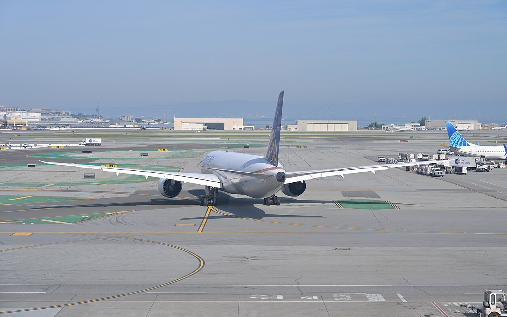

United Airlines revenue grew in the third quarter, but higher fuel costs cut its margin


United Airlines' revenue grew 17.4% to $17.9 billion in the third quarter of 2026, compared with the same quarter a year earlier. Costs grew faster, so operating margin fell to 8.1% from 9.2%. Cash from operations dropped to $465 million, and capital spending rose, so free cash flow was negative.
Fares drove revenue growth
Revenue growth was faster than in the second quarter, when it was 16.0%, and the first quarter, when it was 10.6%. In its 10-Q United said: passenger revenue increased $2.4 billion, or 17.6%, primarily due to a 16.8% increase in yield (the average passenger revenue for each mile a passenger flew) and a 2.4% increase in the number of passengers flown. The company's earnings release says capacity, measured in seat miles, was up 1.3%. Most of the growth therefore came from higher fares, not from flying more.
Net income rose 8.4% to $1.0 billion, and diluted earnings per share rose 8.3% to $3.14. For the first three quarters of 2026 combined, revenue was up 14.8% on the same period of 2025.
Fuel took a larger share of revenue
Operating income rose 3.7% to $1.4 billion, slower than revenue, so operating margin fell 1.1 points. The 10-Q gives fuel as the main reason: aircraft fuel expense increased $1.8 billion, or 61.6%, primarily due to a higher average price per gallon of fuel. Operating margin was 6.2% in the second quarter and 6.8% in the first, so the third quarter was higher than either.
Income tax was 21.5% of pretax income, against 24.4% a year earlier.
Cash flow turned negative as capital spending rose
Cash from operations fell 61.8% to $465 million, from $1.2 billion a year earlier. Capital spending rose 46.1% to $2.1 billion. Free cash flow, which is cash from operations minus capital spending, was an outflow of $1.7 billion, compared with an outflow of $246 million a year earlier.
At the end of the quarter United held $14.7 billion in cash and short-term investments against total debt of $26.4 billion. Shareholders' equity was $17.8 billion, up from $14.3 billion a year earlier. United spent nothing on share buybacks in the quarter.
What the company said to expect
In its earnings release the company said: "United expects Q4 total operating revenue growth to accelerate versus Q3 and set another record with an over 20% year-over-year increase". This is the company's own statement, not a forecast by The Filing Desk.
Twelve quarters of figures
Sources: Form 10-Q (SEC EDGAR) · Form 10-Q filing index · EDGAR company facts for United Airlines · United Airlines third-quarter 2026 earnings release (Exhibit 99.1). More figures for United Airlines are on its company page.